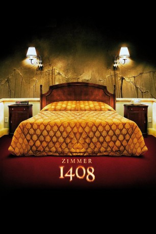

#1788 Zimmer 1408
Alternativ: 1408 (Englischer Titel)
 
 IMDB-Wertung: 6.8 / 10
IMDB-Wertung: 6.8 / 10  Tomatometer: 79
Tomatometer: 79  Metascore: 64
Metascore: 64 
Mike Enslin hat zwei erfolgreiche Bücher über Hotels, in denen es angeblich spukt, veröffentlicht. Nach dem Tod seiner Tochter stürzt er sich noch kompromissloser in die Arbeit. Derzeit fasziniert ihn ein besonders mysteriöser Fall: Im Zimmer 1408 des New Yorker Dolphin Hotel sind unter seltsamen Umständen bereits 56 Gäste gestorben. Um der Wahrheit auf den Grund zu gehen, schlägt Mike alle Warnungen des Hotelmanagers in den Wind und übernachtet in Nr. 1408 – ein kafkaesker Alptraum beginnt.
verschieben zu "X:\Person\Stephen King"
Jahr: 2007
Dauer: 104 Minuten
FSK: 16
Land: USA Studio: MGMTonspuren: DTS - ,
Untertitel: Deutsch,
Auflösung: 720p (1280x528) Größe: 6707 MB
Genre: Horror, Fantasy, Mystery
Regisseur: Mikael Håfström
Drehbuch: Matt Greenberg, Scott Alexander, Larry Karaszewski, Stephen King
Soundtrack: Gabriel Yared
Darsteller:
 John Cusack als Mike Enslin
John Cusack als Mike Enslin Tony Shalhoub als Sam Farrell
Tony Shalhoub als Sam Farrell Len Cariou als Mike's Father
Len Cariou als Mike's Father Isiah Whitlock Jr. als Hotel Engineer
Isiah Whitlock Jr. als Hotel Engineer- Jasmine Jessica Anthony als Katie
- Walter Lewis als Book Store Cashier
 Eric Meyers als Man #1 at Book Signing
Eric Meyers als Man #1 at Book Signing- Holly Hayes als Lady at Book Signing
- Alexandra Silber als Young Woman at Book Signing
 Johann Urb als Surfer Dude
Johann Urb als Surfer Dude- Andrew Lee Potts als Mailbox Guy
 Samuel L. Jackson als Gerald Olin
Samuel L. Jackson als Gerald Olin- Kim Thomson als Desk Clerk
 Drew Powell als Assistant Hotel Manager
Drew Powell als Assistant Hotel Manager- Mary McCormack als Lily
 Benny Urquidez als Claw Hammer Maniac
Benny Urquidez als Claw Hammer Maniac- Ray Nicholas als Factory Owner
- Paul Kasey als Kevin O'Malley
- George Cottle als Mailbox Worker
- William Willoughby als Mailbox Worker
- Angel Oquendo als Taxi Cab Driver
- Thomas A. McMahon als Cop #1
- Kevin Dobson als Priest
 Peter Conboy als Man Outside Hotel Fire (uncredited)
Peter Conboy als Man Outside Hotel Fire (uncredited)- Rob McGillivray als Bellboy (uncredited)
 Kate Walsh als Mike Enslin's ex-wife (uncredited)
Kate Walsh als Mike Enslin's ex-wife (uncredited)- Paul Birchard als Mr. Innkeeper
- Margot Leicester als Mrs. Innkeeper
- David Nicholson als Man #2 at Book Signing
- Emily Harvey als Secretary
- William Armstrong als Clay the Lawyer
- Noah Lee Margetts als Bellboy
- Gil Cohen-Alloro als Maitre D'
- Tina Maskell als 1950s Lady
- Julian Spencer als Mailbox Worker
- Anthony C. Mazza als Cop #2
- Chris Carey als Fireman
- Lily Grace Alexander als 10 Year Old Girl (in director's cut only)
- Georgie Lee-Robinson als Book Store Assistant (uncredited)
- Bernadette Lords als Hotel Guest (uncredited)
- Steve Somers als Father of 10yr Old Girl (uncredited)
- Jacob White als Bellboy (uncredited)
Datei: X:\2007(N-Z)\Zimmer 1408 (2007, FSK16, 1280x528).mkv seit 19.08.2015
Festplatte: HD 2007(A-Z)-2008(A-F)
 Es gibt insgesamt 56 Filme in der Gruppe '2007(N-Z)'
Es gibt insgesamt 56 Filme in der Gruppe '2007(N-Z)'